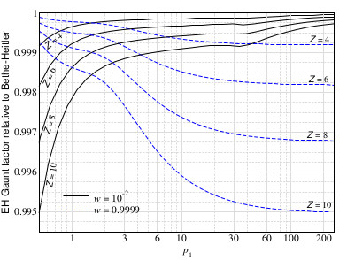
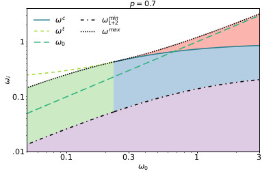

<section>
	<div class="container">
		<h3>Radiative processes</h3>

		<h4>Bremsstrahlung</h4>
		<p><span class="image right"></span>
			Bremsstrahlung is the main process responsible for the X-ray radiation of galaxy clusters, it provides a
			source of soft photons relevant to the thermalization of spectral distortions of the cosmic microwave
			background, and is a very important radiation mechanism close to compact objects. In addition, it is one of
			the main galactic foregrounds for cosmic microwave back-ground temperature anisotropy studies. Therefore, it
			is important to have an accurate representation of this process, a problem that can be cast into
			computations of the free-free Gaunt factor, which extend the classical Kramers formula by quantum and
			relativistic corrections.
			This can be very precisely calculated using the differential cross section of Elwert & Haug, that we have
			investigated computing the total Gaunt factor and thermal averages for ionic charge Z≤10 and compared the
			obtained results to various limiting cases.<br>
			<b>Reference:</b><br>
			J. Chluba, AR, and B. Bolliet, <i>Improved calculations of electron–ion bremsstrahlung Gaunt factors for
				astrophysical applications</i>, Mon. Not. Roy. Astron. Soc. 492 (2020), no. 1 177–194, <a
				href="https://arxiv.org/abs/1911.08861"> [arXiv:1911.08861] </a>
		</p>

		<h4>Double Compton</h4>
		<p><span class="image left"></span>
			The double Compton process is a next to leading order electron-photon interaction that can be thought of as
			a Compton scattering event associated with the production or destruction of an extra real photon. As such,
			DC scattering is physically similar to the Bremsstrahlung process, the latter being the first order
			radiative correction to the Coulomb interaction. Together, these two processes are responsible for the
			emission and absorption of photons in many astrophysical plasmas, playing a crucial role in controlling
			their number density. We provided a quasi-exact description of the double Compton emission process, putting
			it on a solid footing for applications in cosmology and astrophysics. Moreover, we developed the code
			DCpack, which allows one to accurately represent the DC emissivity over a very wide range of photon and
			electron energies. Together with the work on Bremsstrahlung, this covers the most important processes
			relevant to the evolution of primordial spectral distortions, even under extreme conditions and
			temperatures.<br>
			<b>Reference:</b><br>
			AR and J. Chluba, <i>The double Compton process in astrophysical plasmas</i>, JCAP 10
			(2020) 025, <a href="https://arxiv.org/abs/2005.06941"> [arXiv:2005.06941] </a>
		</p>

	</div>
</section>